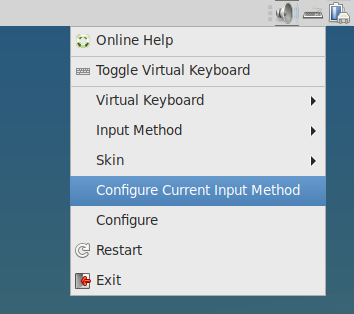
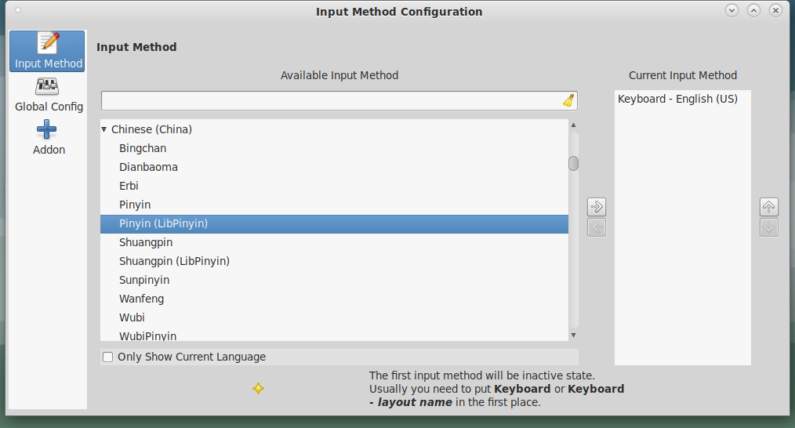

Setting up Chinese Pinyin on my FreeBSD
A few days earlier, I was wondering if I can set up pinyin input on my FreeBSD machines. After some research, big thanks to outpaddling on his post on the FreeBSD forum for pointing me in the right direction. I was able to get it to work. Here is the guide to set up pinyin on your FreeBSD machine.
First, install the chinese fonts,
Next, install the input engine, here we are going to use fcitx. As per recommendation from the original poster, it seems that libpinyin and sunpinyin works well.
After installation is done, add the following lines to your .xinitrc.
XMODIFIERS='@im=fcitx' GTK_IM_MODULE=fcitx GTK3_IM_MODULE=fcitx QT4_IM_MODULE=fcitx # Or use qtconfig to change export XMODIFIERS GTK_IM_MODULE GTK3_IM_MODULE QT4_IM_MODULE
Lastly for those using a desktop environment, you can add the fcitx to startup by doing the following,
And now you can restart X and see if fcitx is loaded. On my mate session, there is now an additional keyboard icon (in the middle) on my panel.
Right click on it to open the panel and choose "Configure Current Input Method".
Make sure "Only Show Current Language" is unchecked and scroll to Chinese (China) and select Pinyin (LibPinyin) or Sunpinyun. To add the input, click on the right arrow and make sure the selected input is added to current input.
Now to test if the pinyin input works, you can open a text editior, and click on the fcitx icon to toggle between english and chinese pinyin input method. You can start typing and a small suggestion box should appear.